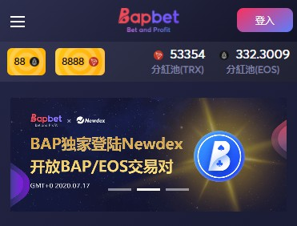
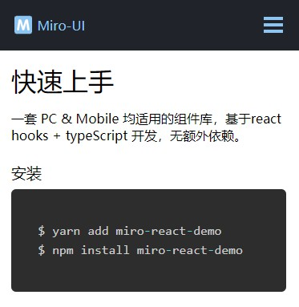
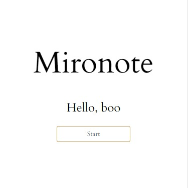

劳业锦
13728906723
yojin0623@foxmail.com
技术栈
熟练使用 Vue 相关技术栈， 了解 React Hooks
熟练使用 HTML5 及 CSS3 常用语法，能高度还原 UI 视觉稿
熟悉 JavaScript 语言，熟练使用 ES6 常用语法，会用 TypeScript
熟悉 AJAX 相关知识，了解 HTTP 协议，能熟练使用 Promise 优化项目中各种异步逻辑
项目使用过 Webpack / Parcel 打包工具，了解前端工程化构建流程。
熟悉 Sass/Less 等 CSS 预处理器
熟悉浏览器渲染过程及前端常用的性能优化策略
熟悉 PC 与移动端的开发与适配，了解微信小程序开发
掌握常用的 Git 命令
公司项目

BAPBET
BAPBET 是基于区块链公平技术的跨链娱乐平台。 它支持 EOS，TRX，ETH，USDT，BTC 和 其他加密货币。 当前游戏包括百家乐，德州扑克，骰子，骰宝，幸运777，二十一点，斗牛等。Sportbet，Live Casion 也将陆续推出。
- BAPBET 项目由 Vue 全家桶开发。
- 独立负责该项目，按设计图稿完成需求和适配移动端。
- 项目中使用 Bootstrap UI， 结合需求对组件进行二次封装
- 对接后端数据，合理使用本地缓存对内容显示进行优化。
- 同时负责 BAPBET 后台管理的前端开发。
- 在活动需求赶进度时，也有根据需求对后端接口进行细微调整。
个人项目


Miro Note
- React/Nextjs/Webpack/Typescript
- Typeorm/PostgreSQL
使用 Nextjs 全栈框架开发的记事本应用，使用 Webpack 进行项目打包，并通过 Docker 和 Bash 脚本完成一键部署。 该项目主要是对 Nodejs 服务端渲染这方面的一次应用实践，部署在阿里云。
[链接]

ToolBox
使用百度翻译 API 完成的一个翻译小程序
工作经验
- 深圳猎语科技有限公司 2019/03 - 2020/09
教育经历
- 深圳职业技术学院